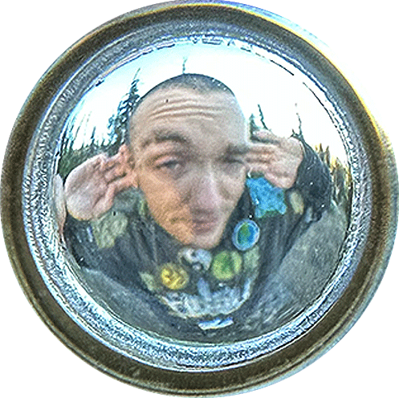

Andy Ukko Poystila is a Salt Spring Island sprout currently growing in the gardens of Burnaby BC, Canada. and happens to be an Illustrator and UI/UX Designer. He is currently working on his degree and all that entails.
hand-coded with love and peace by © Andy Ukko Poystila